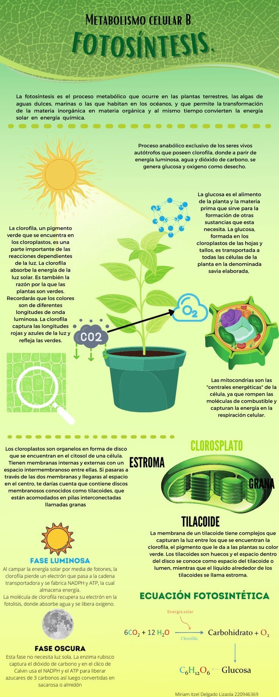

La Fotosíntesis
¿Qué es la Fotosíntesis?
La fotosíntesis es el proceso biológico mediante el cual las plantas, algas y algunas bacterias convierten la luz solar en energía química. Esta energía química se almacena en forma de glucosa, que es utilizada por la planta para su crecimiento y desarrollo. Este proceso también produce oxígeno, un gas vital para los seres vivos, incluido el ser humano.
El Proceso de la Fotosíntesis
La fotosíntesis ocurre en los cloroplastos de las células vegetales, principalmente en las hojas. El proceso se puede dividir en dos fases principales:
- Fase Luminosa: Esta fase ocurre en la membrana de los tilacoides y depende de la luz solar. Durante esta fase, la energía solar es capturada por la clorofila y convertida en energía química en forma de ATP (adenosín trifosfato) y NADPH (un tipo de molécula que transporta electrones).
- Fase Oscura o Ciclo de Calvin: En esta fase, que no requiere luz, las moléculas de ATP y NADPH producidas en la fase luminosa se utilizan para convertir el dióxido de carbono (CO₂) del aire en glucosa. Este proceso ocurre en el estroma del cloroplasto.

¿Por qué es Importante la Fotosíntesis?
La fotosíntesis es crucial porque es la base de la vida en la Tierra. Algunas razones de su importancia son:
- Producción de oxígeno: Durante la fotosíntesis, las plantas liberan oxígeno al ambiente, lo cual es esencial para la respiración de los animales y seres humanos.
- Fuente primaria de energía: Las plantas son la fuente inicial de energía para casi todos los organismos. Los herbívoros se alimentan de plantas, y a su vez, los carnívoros dependen de los herbívoros para su sustento.
- Impacto en el ciclo del carbono: Las plantas capturan CO₂, ayudando a regular el dióxido de carbono en la atmósfera, lo que tiene un impacto directo en la mitigación del cambio climático.
¿Cómo Ayuda la Fotosíntesis a las Plantas a Generar Energía?
El principal objetivo de la fotosíntesis es que las plantas puedan generar energía para su crecimiento y desarrollo. Este proceso convierte la luz solar en energía química, que es almacenada en forma de glucosa (un tipo de azúcar) y otras moléculas orgánicas. Esta glucosa es la principal fuente de energía de las plantas y se utiliza en diferentes procesos vitales:
- Producción de energía para el crecimiento: La glucosa generada durante la fotosíntesis proporciona la energía que las plantas necesitan para crecer, producir flores, frutos y semillas.
- Almacenamiento de energía: Las plantas también pueden almacenar la glucosa en forma de almidón en sus raíces, tallos o frutos. Esta reserva energética puede ser utilizada cuando la planta no reciba suficiente luz solar, como en la noche o durante períodos de poca luz.
- Síntesis de otros compuestos: La glucosa también sirve como base para la fabricación de otros compuestos importantes, como proteínas, ácidos nucleicos (ADN, ARN) y lípidos, que son necesarios para la estructura celular y otras funciones vitales.
En resumen, gracias a la fotosíntesis, las plantas pueden capturar la energía solar, convertirla en glucosa y usarla para alimentar sus procesos vitales, lo que les permite crecer, desarrollarse y reproducirse.
Beneficios de la Fotosíntesis para el Ser Humano
Los beneficios de la fotosíntesis para los seres humanos son incalculables. Algunos de los más importantes son:
- Oxígeno para la respiración: La fotosíntesis produce oxígeno, el cual es esencial para la vida de los seres humanos y animales.
- Alimento: Las plantas, que realizan la fotosíntesis, son la base de nuestra alimentación, proporcionando granos, frutas, vegetales y otros productos esenciales.
- Regulación del clima: La fotosíntesis ayuda a regular los niveles de CO₂ en la atmósfera, contribuyendo a mitigar los efectos del cambio climático.
Conclusión
La fotosíntesis es un proceso fundamental para la vida en nuestro planeta. Sin ella, no existirían las plantas, y la cadena alimentaria colapsaría. Además, la fotosíntesis regula los gases en la atmósfera y contribuye al equilibrio ecológico del planeta. Por lo tanto, es vital comprender y proteger este proceso para mantener la salud de nuestro medio ambiente.